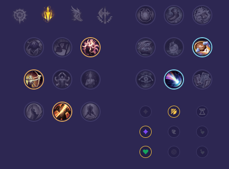

Starter: Ostrze Dorana Mikstura Zdrowia Core Bulid: Pogromca Krakenów Nagolenniki Berserkera Widmowy Tancerz Full Bulid: Ostrze Nieskończoności Pozdrowienia Lorda Dominika Krwiopijec Śmiertelne Przypomnienie

Słaby przeciwko: - Swain - Veigar - Ziggs - Kog'Maw - Draven - Zeri Dobry przeciwko: - Ezreal - Kai'Sa - Yunara - Varus - Aphelios - Lucian